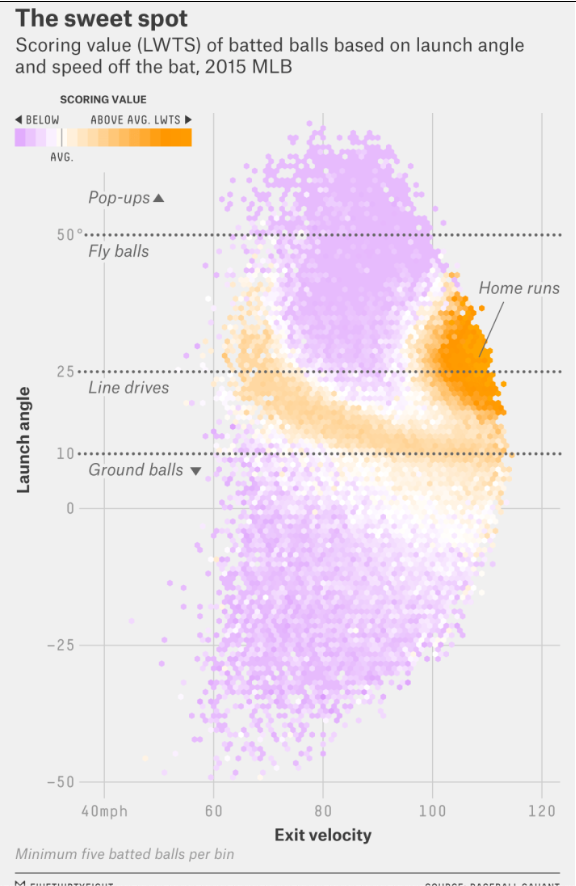
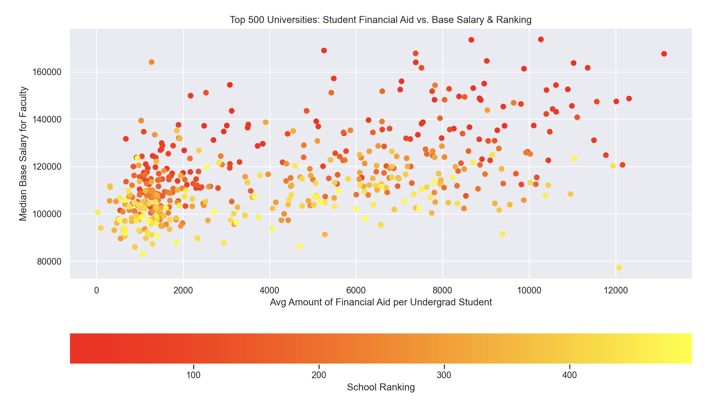

Marks
- mark 1: area (map of U.S.)
- mark 2: line (vote count)
- mark 3: points (Maine and Nebraska legends)
Channels
- channel 1: color
- represents categorical attribute (R vs D)
- this is a good mapping because it is expressive and effective by clearly showing the vote outcome
Colormap
- colormap categorical (red/blue)
- represents categorical attribute (R vs D)
- this is a good mapping because it is for an identity channel

Marks
- mark 1: points (points on graph)
- mark 2: lines (benchmark lines)
- mark 3: line (scoring value legend)
Channels
- chanel 1: color
- represents divergent quantitative attribute (scoring value)
- this is a good mapping because it is expressive and effective by clearly showing the scoring value relative to average
- channel 2: position
- represents divergent quantitative attribute of launch angle and sequential quantitative attribute of exit velocity
- this is a good mapping because it is expressive and effective by clearly showing the launch angle and exit velocity
Colormap
- colormap divergent
- represents divergent quantitative attribute (scoring value)
- this is a good mapping because it is for a magnitude channel

Marks
- mark 1: points (points on graph)
Channels
- chanel 1: color
- represents sequential attribute (ranking from 1-500)
- this seems to be a good mapping since gives a good sense of how school rankings (and therefore funding, etc) may result in the differences in median salary & financial aid.
- channel 2: position (horizontal and vertical)
- the position focuses on a potential correlation between median salary and financial aid -- there are two channels in this case, each of which represent one of the above two attributes
Colormap
- colormap sequential
- represents sequential attribute (school rankings)
- as mentioned before, this is a good mapping because the goal of the visualization is not to split schools into "good" or "bad," and the schools aren't being put into any categories. The focus is on the ranking, so a sequential colormap is best.